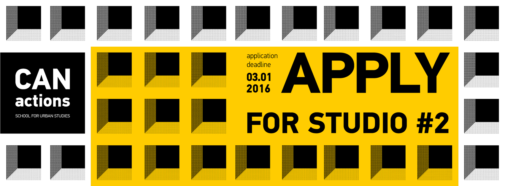

<!DOCTYPE html>
<html>
</html>
<head>
  <meta charset="utf-8">
  <meta http-equiv="X-UA-Compatible" content="IE=edge">
  <title>Iuliia Vorobiova- Portfolio</title>
  <meta name="description" content="">
  <meta name="viewport" content="width=device-width, initial-scale=1">
  <meta name="robots" content="all,follow">
  <!-- Bootstrap CSS-->
  <link rel="stylesheet" href="vendor/bootstrap/css/bootstrap.min.css">
  <!-- Font Awesome CSS-->
  <link rel="stylesheet" href="vendor/font-awesome/css/font-awesome.min.css">
  <!-- Google fonts - Roboto-->
  <link rel="stylesheet" href="https://fonts.googleapis.com/css?family=Roboto:400,300,700,400italic">
  <!-- owl carousel-->
  <link rel="stylesheet" href="vendor/owl.carousel/assets/owl.carousel.css">
  <link rel="stylesheet" href="vendor/owl.carousel/assets/owl.theme.default.css">
  <!-- theme stylesheet-->
  <link rel="stylesheet" href="css/style.blue.css" id="theme-stylesheet">
  <!-- Custom stylesheet - for your changes-->
  <link rel="stylesheet" href="css/custom.2.css">
  <!-- Favicon-->
  <link rel="shortcut icon" href="img/favicon.png">
  <!-- Tweaks for older IEs--><!--[if lt IE 9]>
    <script src="https://oss.maxcdn.com/html5shiv/3.7.3/html5shiv.min.js"></script>
    <script src="https://oss.maxcdn.com/respond/1.4.2/respond.min.js"></script><![endif]-->
</head>
<body>
    <div id="all">
      <div class="container-fluid">
        <div class="row row-offcanvas row-offcanvas-left"> 
          <!--   *** SIDEBAR ***-->
          <div id="sidebar" class="col-md-4 col-lg-3 sidebar-offcanvas">
            <div class="sidebar-content">
              <h1 class="sidebar-heading"> <a href="index.html">Iuliia Vorobiova</a></h1>
              <p class="sidebar-p notonmobile">I am a versatile person that could be one day a designer and next day a developer and some other day a video maker. I love creating things from a very scratch to a very final stage, along the way enjoin creative process. </p>
              <p class="sidebar-p notonmobile">Originally from Ukraine, currently based in Milan. </p>
              <ul class="sidebar-menu">
                  <!-- Link-->
                  <li class="sidebar-item"><a href="index.html" class="sidebar-link active">Home</a></li>
                  <!-- Link-->
                  <li class="sidebar-item"><a href="about.html" class="sidebar-link">About</a></li>
                  <!-- Link-->
                  <li class="sidebar-item"><a href="contact.html" class="sidebar-link">Get in touch</a></li>
              </ul>
              <p class="social"><a href="https://www.linkedin.com/in/iuliiavorobiova/" target="_blank"  data-animate-hover="pulse" class="external gplus"><i class="fa fa-linkedin"></i></a>
                <a href="https://www.facebook.com/juliya.vorobyova" target="_blank"  data-animate-hover="pulse" class="external facebook"><i class="fa fa-facebook"></i></a>
                <a href="https://www.instagram.com/melania.m13"  target="_blank" title="" class="external instagram"><i class="fa fa-instagram"></i></a>
                <a href="mailto: iuliia.vorobiova@gmail.com" data-animate-hover="pulse" class="email"><i class="fa fa-envelope"></i></a></p>
              <div class="copyright text-center text-md-left">
                <p class="credit">&copy;2019 Iuliia Vorobiova </p>
                <!-- Please do not remove the backlink to us, unless you support the development at http://bootstrapious.com/donate. It is part of the license conditions. Thanks for understanding :)        -->
              </div>
            </div>
          </div>
        <!--   *** SIDEBAR END ***  -->
        <!--   *** DETAIL ***-->
        <div class="col-md-8 col-lg-9 content-column white-background">
          <div class="small-navbar d-flex d-md-none">
            <button type="button" data-toggle="offcanvas" class="btn btn-outline-primary"> <i class="fa fa-align-left mr-2"></i>Menu</button>
            <h1 class="small-navbar-heading"> <a href="index.html">Portfolio </a></h1>
          </div>

          
                  <!--   *** DETAIL ***-->
        <div class="col-md-12 col-lg-11 ">
            
            <div class="row">
              <div class="col-xl-11">
                <div class="content-column-content">

                    <div class="row">
                        <div class="col-12 col-md-10 "><h6 style="margin-top: 0px ; "><h1>CANactions school<br></h1> <h6 style="margin-top: 0px;">Graphic Contect Development <br> Social Media <br> PR stratagy <br> Organizational Management 
                      </h6></div>
                          <div class="col-6 col-md-2 notonmobile"> </div>
                    </div>
          
              
                    <p class="lead"> <b>Do (post)industrial cities of Ukraine have a future? </b> Have they truly become post- or do they still remain industrial? How to take a step forward from utopian Soviet past to a contemporary city without utopian pretense? The STUDIO participants have been working on finding answers to these questions and raised new ones
                        through developing strategic scenarios and tactical proposals for Kramatorsk – an Eastern Ukrainian city which has been chosen for our case study. </p>
                    
                    
                    <div class="item  notonmobile" style="padding-top:10px"></div>
          
        <br>
                  
                  <!-- /#main-slider-->
                  
                 <p><b>CANactions School for Urban Studies </b> is an interdisciplinary educational lab, based in Kyiv, Ukraine. It’s aimed at exploration of Ukrainian cities, identifying
                    concepts and defining actions for strategic development. What is a contemporary city? What are the Ukrainian cities’ peculiarities? Who currently defines their
                    development? How to transform this process in a way that is more efficient and transparent? Participants of the School will work on these and many other
                    questions with the support of leading experts from all over the world.</p>

                  <div class="item  notonmobile" style="padding-top:10px"></div>
          
                  

                
              <br>


                    <h4>Project</h4>

                    <a href="http://eng.canactions.com/" target="_blank">CANactions School</a>  <br> 
                      <p>CANactions School <br>
                      
                       1 year work experince  <br>
                       Kyiv (Ukraine) | 2015 
                 
                  
   
                      </p>
                          
                  
                    </div>
              </div>
            </div>
          </div>
        </div>
      </div>
    </div>
  
  <!-- JavaScript files-->
  <script src="vendor/jquery/jquery.min.js"></script>
  <script src="vendor/popper.js/umd/popper.min.js"> </script>
  <script src="vendor/bootstrap/js/bootstrap.min.js"></script>
  <script src="vendor/jquery.cookie/jquery.cookie.js"> </script>
  <script src="vendor/owl.carousel/owl.carousel.min.js"></script>
  <script src="vendor/masonry-layout/masonry.pkgd.min.js"></script>
  <script src="js/front.js"></script>
</body>